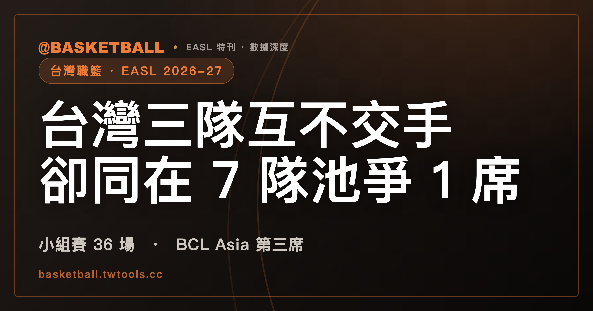

2026-27 EASL 小組賽，台灣三隊互不交手，卻同在一個 7 隊池裡爭 1 席 BCL Asia 門票
依 2026 年 10 月 4 日抓取的 EASL 公告與賽程頁，台灣三隊 2026-27 小組賽交手 0 場，卻同在 BCL Asia 第三席的 7 隊池裡。

台灣職籃 · EASL 2026-27｜分組 · 台灣三隊 · BCL Asia
2026 年 10 月 3 日（六），臺北富邦勇士（Taipei Fubon Braves）在菲律賓宿霧以 103：89 擊敗澳門昊駿（Macau Hou Chon），東亞超級聯賽（EASL）2026-27 賽季的小組賽開打。
勇士在 B 組。台鋼獵鷹（TSG GhostHawks）在 A 組，桃園璞園領航猿（Taoyuan Pauian Pilots）在 C 組。依 EASL 2026 年 9 月 28 日公布的分組，36 場小組賽裡，台灣三隊彼此交手 0 場。
另一條線把三隊綁在一起。EASL 2026 年 7 月 21 日的公告說，這個賽季有 3 支 EASL 球隊取得 BCL Asia 資格，其中 1 席給日本與韓國以外排名第一的球隊。台灣、香港、澳門、蒙古、菲律賓的 EASL 球隊，爭的是同一個名額。
讀完可以查出自己支持的台灣隊哪一天在哪裡比賽、在哪裡看。本文資料主要取自 EASL 官方公告與賽程頁，2026 年 10 月 4 日抓取；賽程之後可能調整，以官網為準，範圍與版本說明見文末。
EASL 2026-27 小組賽 36 場，12 隊分三組，每隊打 6 場
EASL 2026 年 9 月 28 日的公告寫明：12 支球隊代表亞洲 7 個籃球市場，分成三組，2026 年 10 月到 2027 年 2 月打 36 場小組賽，3 月進入季後賽。據中央社同日報導，12 隊的組成是台灣、日本各 3 隊，韓國 2 隊，香港、澳門、蒙古、菲律賓各 1 隊。
每組 4 隊。一支球隊對 3 個組內對手各打 1 場主場、1 場客場，共 6 場。每組 12 場，三組合計 36 場。
主客各 3 場，是照賽程頁左隊為主隊算出來的。10 月 3 日宿霧的兩場是開幕集中賽，左隊是名義主隊。台灣三隊的 3 場主場都在台灣。
季後賽的門檻，EASL 9 月 28 日的公告寫的是「3 月進入季後賽」。各組前 2 名晉級 3 月的六隊季後賽，這個說法的來源是中央社的一篇報導。季後賽的對陣、場地與賽制，本文查閱的 EASL 資料中沒有。
新賽季的冠軍獎金尚未公布。據中央社報導，上季冠軍拿到 150 萬美元。
台灣三隊分進 A、B、C 三組，小組賽 36 場裡彼此交手 0 場
12 隊的分組依 EASL 9 月 28 日的公告。後文與下表用短名：東京＝東京 Alvark（Alvark Tokyo），高陽＝高陽 Sono Skygunners（Goyang Sono Skygunners），南戈壁＝南戈壁 Broncos（South Gobi Broncos），釜山＝釜山 KCC Egis（Busan KCC Egis），長崎＝長崎 Velca（Nagasaki Velca），琉球＝琉球黃金國王（Ryukyu Golden Kings），Abra＝Abra Weavers，香港東區＝Hong Kong Eastern；台灣三隊寫台鋼、勇士、領航猿。
下表回答：12 隊各在哪一組、各屬哪個聯盟。表中的 MBA 是公告所寫的 MBA The League。
| 組 | 球隊 | 聯盟 |
|---|---|---|
| A | 東京 | B.LEAGUE |
| A | 高陽 | KBL |
| A | 台鋼 | P. LEAGUE+ |
| A | 南戈壁 | MBA |
| B | 釜山 | KBL |
| B | 澳門昊駿 | 澳門特區冠軍 |
| B | 勇士 | P. LEAGUE+ |
| B | 長崎 | B.LEAGUE |
| C | Abra | MPBL |
| C | 香港東區 | 香港特區冠軍 |
| C | 琉球 | B.LEAGUE |
| C | 領航猿 | P. LEAGUE+ |
含台灣隊的小組賽共 18 場，是 36 場的一半：三隊各 6 場，彼此沒有重疊。
三隊的 EASL 資歷不同。EASL 2026 年 5 月 26 日的公告稱，這是 PLG 首次在同一季有三支球隊參賽。台鋼是第一次參加 EASL，公告寫台鋼是台南的球隊，EASL 主場比賽在高雄舉行。勇士在 2023-24 與 2025-26 賽季參賽過，本季是第 3 次；公告寫勇士上季在 A 組 2 勝 4 敗，差一點取得季後賽席次。領航猿連續第 3 季參賽，2024-25 與 2025-26 兩季都在冠軍戰落敗。
台灣三隊所屬的 P. LEAGUE+（PLG）是台灣的職業籃球聯盟之一，另一個是 TPBL。兩聯盟並立的來龍去脈，以及 TPBL 沒有球隊參加 EASL 的經過，寫在〈為什麼台灣有兩個職籃聯盟？〉；兩聯盟在球員身分、註冊名額、外籍球員薪資與選秀辦法上的差異，見〈TPBL 把球員分成 2 種身分，P. LEAGUE+ 分成 4 種：兩聯盟規則逐條對照〉；TPBL 的國內賽程另見〈TPBL 2026-27 例行賽每隊 18 主 18 客，夢想家卻有連續 7 場客場〉。
2026-27 的 BCL Asia 第三個名額，台灣三隊與另外 4 隊共 7 隊爭 1 席
EASL 2026 年 7 月 21 日的公告說明了 BCL Asia 的資格。公告稱，BCL Asia 是 FIBA Asia 的洲際俱樂部賽事，位階居首；冠軍取得 FIBA 洲際盃（FIBA Intercontinental Cup）的席次，與各洲的冠軍球會及 NBA 發展聯盟的代表爭奪世界冠軍球會的頭銜。
依同一份公告，3 支 EASL 球隊會依 2026-27 賽季的表現取得 BCL Asia 資格：日本球隊中排名第一的 1 隊、韓國球隊中排名第一的 1 隊，以及日本與韓國以外排名第一的 1 隊。公告接著寫，代表香港、澳門、台灣、蒙古與菲律賓的 EASL 球隊，將爭這個名額，這些市場裡名次居首的球隊取得資格。公告把台灣寫成 Chinese Taipei，本文的台灣指 EASL 分組名單裡的三支 PLG 球隊。
候選池的 7 隊，是把 7 月 21 日公告的規則套用在 9 月 28 日公布的名單上算出來的，不是公告裡的原句：12 隊扣掉日本 3 隊與韓國 2 隊，剩下 7 隊，也就是台灣 3 隊、香港 1 隊、澳門 1 隊、蒙古 1 隊、菲律賓 1 隊。
7 隊在三組裡的分布是：A 組 2 隊（台鋼、南戈壁），B 組 2 隊（勇士、澳門昊駿），C 組 3 隊（領航猿、香港東區、Abra）。同組的池內隊伍在小組賽交手 2 次；台鋼與勇士分在不同組，0 場。
日本 3 隊爭 1 席，韓國 2 隊爭 1 席，7 隊池爭 1 席。這三組數字都是隊數，不是晉級機率。
這個名額還有三件事要留意。
第一，排名依據。公告對三個名額都寫「排名」（best-ranked），第三席另用「名次居首」（highest-finishing）描述。這個排名是用小組賽戰績還是賽季結束時的名次，本文查閱的 EASL 公告與中央社報導中查無說明（查詢日 2026 年 10 月 4 日）。
第二，發布方。BCL Asia 的這套規則，來源是 EASL 自己的公告；本文沒有找到 FIBA 或 BCL Asia 的第一方說法。
第三，適用範圍。公告寫這套資格架構只適用 2026-27 賽季，並取代先前公布的方案：菲律賓排名第一的 EASL 球隊自動取得資格。公告也說，2026-27 賽季的更多細節會陸續公布。
在 EASL 說明排名依據之前，7 隊池是一份名單，還不是一份排名。
台灣三隊 18 場小組賽，9 場在台灣，第一場主場是 10 月 21 日的高雄鳳山
本節的日期與時刻，是依 EASL 賽程頁換算的台北時間。
台灣三隊的 18 場裡，9 場在台灣舉行，是三隊各 3 場主場：勇士在台北和平籃球館，領航猿在桃園巨蛋（Taoyuan Arena），台鋼在高雄鳳山體育館（Fengshan Stadium）。賽程頁有 4 場小組賽的場館標 TBC（待定），其中 1 場是領航猿 12 月 26 日作客香港東區。
全賽事 36 場小組賽有 25 場排在週三，下面三張表的星期欄可以對照。表中 10 月至 12 月是 2026 年，1 月以後是 2027 年。「主」是賽程頁左隊，也就是名義主隊；10 月 3 日宿霧那場，勇士在表中記為客隊。客場場館寫在各表下方。
台鋼（A 組）
下表回答：台鋼哪一天、對誰、在哪裡比賽。
| 日期 | 星期 | 主客 | 對手 | 場館 |
|---|---|---|---|---|
| 10/21 19:10 | 三 | 主 | 高陽 | 高雄鳳山體育館 |
| 11/4 19:10 | 三 | 主 | 東京 | 高雄鳳山體育館 |
| 12/15 18:10 | 二 | 客 | 高陽 | 見表下 |
| 1/6 19:10 | 三 | 主 | 南戈壁 | 高雄鳳山體育館 |
| 1/13 18:10 | 三 | 客 | 東京 | 見表下 |
| 2/5 19:10 | 五 | 客 | 南戈壁 | 見表下 |
客場場館依序是：12 月 15 日高陽的 Goyang Sono Arena，1 月 13 日東京的 Arena Tachikawa Tachihi，2 月 5 日南戈壁的 M Bank Arena。
台鋼 10 月 21 日迎戰高陽，是三隊在台灣的第一場主場。11 月 4 日迎戰東京之後，隔 41 天才有下一場。2027 年 2 月 5 日作客南戈壁，是 36 場小組賽的末場。
勇士（B 組）
下表回答：勇士哪一天、對誰、在哪裡比賽。
| 日期 | 星期 | 主客 | 對手 | 場館 |
|---|---|---|---|---|
| 10/3 16:00 | 六 | 客 | 澳門昊駿 | 見表下 |
| 11/11 18:10 | 三 | 客 | 釜山 | 見表下 |
| 12/9 19:10 | 三 | 主 | 長崎 | 台北和平籃球館 |
| 12/12 17:10 | 六 | 主 | 澳門昊駿 | 台北和平籃球館 |
| 12/23 18:10 | 三 | 客 | 長崎 | 見表下 |
| 1/27 19:10 | 三 | 主 | 釜山 | 台北和平籃球館 |
客場場館依序是：10 月 3 日宿霧的 SM Seaside Cebu Arena，11 月 11 日釜山的 Busan Sajik Gymnasium，12 月 23 日長崎的 Happiness Arena。
勇士打完開幕戰，隔 39 天才有下一場。12 月有 3 場：9 日與 12 日兩場在主場，23 日作客長崎。2027 年 1 月 27 日主場迎戰釜山，是勇士小組賽的末場。
領航猿（C 組）
下表回答：領航猿哪一天、對誰、在哪裡比賽。
| 日期 | 星期 | 主客 | 對手 | 場館 |
|---|---|---|---|---|
| 10/28 19:10 | 三 | 主 | 琉球 | 桃園巨蛋 |
| 12/26 16:10 | 六 | 客 | 香港東區 | TBC（待定） |
| 12/30 19:10 | 三 | 主 | Abra | 桃園巨蛋 |
| 1/3 17:10 | 日 | 主 | 香港東區 | 桃園巨蛋 |
| 1/20 18:40 | 三 | 客 | 琉球 | 見表下 |
| 1/30 19:10 | 六 | 客 | Abra | 見表下 |
客場場館依序是：1 月 20 日琉球的 Okinawa Suntory Arena，1 月 30 日 Abra 主場的 SM Seaside Cebu Arena。
領航猿 10 月 28 日開出主場後，隔 59 天才有第 2 場。6 場裡有 5 場排在 12 月 26 日到 1 月 30 日之間，其中 12 月 30 日與 1 月 3 日兩場主場相隔 4 天。
台灣三座主場的售票，本文查閱的 EASL 官方頁面中查無說明（查詢範圍見文末）。EASL 公告提供售票管道的是 10 月 3 日的宿霧開幕戰，經由 Ticketmaster。台灣主場的購票消息，請留意球團與 EASL 官網的公告。
在台灣看 EASL：民視數位平台轉播全部 42 場，台灣球隊的主場另在 FTV1 無線台播出
EASL 2026 年 10 月 3 日公布轉播夥伴。公告寫，台灣觀眾可以透過民視（Formosa TV）的數位平台收看 2026-27 賽季全部 42 場 EASL 比賽，平台包括 FTV News YouTube 頻道、4GTV YouTube 頻道與 4GTV app，另有 TVBS 的報導；台灣球隊的所有主場比賽也在 FTV1 無線電視播出。42 場是公告的數字，公告沒有拆開小組賽與季後賽各占幾場。
公告沒有逐場列出「台灣球隊的主場比賽」；本文把它對應到上一節的 9 場，這 9 場的主隊都是台灣隊，場館也都在台灣。照這個對應，勇士、台鋼、領航猿的主場，公告列了 FTV1 與民視數位平台兩條路；客場與其他組的比賽，公告列的是民視數位平台。
EASL 官網轉播頁另載明兩點：TVBS 的內容只有賽後精華，台灣觀眾也可以在 EASL 官方 YouTube 頻道看直播（實際以官方頻道為準）。轉播頁與 10 月 3 日公告內容有出入時，以日期較新的公告為準。
常見問題
台灣三隊 EASL 小組賽哪幾天在台灣比賽？
依 2026 年 10 月 4 日抓取的 EASL 賽程頁，2026-27 小組賽有 9 場在台灣：台鋼、勇士、領航猿各 3 場主場，分別在高雄鳳山體育館、台北和平籃球館、桃園巨蛋，第一場是 10 月 21 日台鋼主場。逐場日期與台北時間見「台灣三隊 18 場小組賽」一節的表。
台灣三隊在小組賽會碰到彼此嗎？
不會。依 EASL 9 月 28 日公告的分組（2026 年 10 月 4 日查閱），台鋼在 A 組、勇士在 B 組、領航猿在 C 組，2026-27 小組賽 36 場彼此 0 場交手。季後賽的對陣，本文查閱的 EASL 資料中沒有。見「台灣三隊分進 A、B、C 三組」一節。
BCL Asia 第三個名額怎麼決定？
依 EASL 7 月 21 日公告，只適用 2026-27 賽季的架構是日本、韓國各 1 席，日本與韓國以外排名第一的 EASL 球隊 1 席；套用在 9 月 28 日的名單上，第三席的候選是含台灣三隊在內的 7 隊。排名依據在本文查閱的 EASL 公告與中央社報導中查無說明（查詢日 2026 年 10 月 4 日）。見「BCL Asia 第三個名額」一節。
在台灣哪裡看 EASL？
依 EASL 2026 年 10 月 3 日公告，民視數位平台轉播 2026-27 賽季全部 42 場，台灣球隊的主場另在 FTV1 無線台播出。見「在台灣看 EASL」一節。
資料來源
- EASL 2026 年 9 月 28 日分組與賽程公告
- EASL 賽程頁（2026 年 10 月 4 日抓取）
- EASL 2026 年 5 月 26 日三支 PLG 球隊公告
- EASL 2026 年 7 月 21 日 BCL Asia 晉級公告
- EASL 2026 年 10 月 3 日轉播夥伴公告
- EASL 轉播頁
- 中央社 2026 年 9 月 28 日報導
- EASL 2026 年 10 月 3 日勇士戰報
範圍與版本：本文以 2026-27 賽季的小組賽為主，以球隊層級與官方公布的賽程、規則為範圍。日期、場次與場館取自 2026 年 10 月 4 日抓取的 EASL 賽程頁與公告，賽程之後可能調整，逐場資訊以官網為準。表中時刻是依賽程頁換算的台北時間；10 月 3 日的兩場另有官方預覽稿的時間可對照，中央社也寫了勇士那場是下午 4 點。勇士開幕戰的比分取自 EASL 官網戰報。售票的查詢範圍是賽程頁的票務連結、轉播頁、9 月 28 日分組公告與宿霧開幕戰公告。